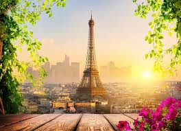
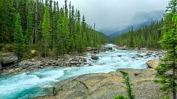

Photo
1.beautiful nature
2.Tower

click3.finger frame sunrise
 click
click
More
Food
1.vagetables
2.fastfood
3.burger
More
Masque
1.Blue Mosque, Istanbul, Turkey.
Blue Mosque, Istanbul, Turkey is reflective of the glory of Islamic civilization and architectural tradition.
Blue World City,features an exact replica of the Blue Mosque, Turkey, not just in form but also in essence.
Blue Mosque is being built over 104 kanals of land, the covered area is precisely the same as the original mosque,
with an ambiance to evoke the same awe and the sublime spiritual experience, which remain the hallmarks of Blue Mosque, Istanbul.
The Blue Mosque at Blue World City has been designed and is being built by a team of professional architects,
engineers and craftsmen who are emulating the same detail as the original with the same zeal.
Built over the land footprint of 43494 Sq Mtr
Covered Area: 7946 Sq Mtr Ground Floor + 5018.52 Sq Mtr Basement
Indoor Capacity: 15000 (5000 more than Blue Mosque Istanbul’s 10000)
5 Main Domes, 6 Minarets, 8 Secondary Domes
Park: 35548 Sq Mtr (to accommodate thousands of worshippers on special occasions)
2.Europe's LARGEST mosque
3.Süleymaniye Mosque
The Süleymaniye Mosque (Turkish: Süleymaniye Camii, pronounced [sylejˈmaːnije])
is an Ottoman imperial mosque located on the Third Hill of Istanbul, Turkey.
The mosque was commissioned by Suleiman the Magnificent (r. 1520–1566) and
designed by the imperial architect Mimar Sinan. An inscription specifies
the foundation date as 1550 and the inauguration date as 1557,
although work on the complex probably continued for a few years after this.
The Süleymaniye Mosque is one of the best-known sights of Istanbul and from its location on the Third Hill
it commands an extensive view of the city around the Golden Horn. It is considered a masterpiece of Ottoman
architecture and one of Mimar Sinan's greatest works.It is the largest Ottoman-era mosque in the city.
Like other Ottoman imperial foundations, the mosque is part of a larger külliye (religious and charitable complex)
which included madrasas, a public kitchen, and a hospital, among others. Behind the qibla wall of the mosque is an
enclosed cemetery containing the separate octagonal mausoleums of Suleiman the Magnificent and his wife Hurrem Sultan (Roxelana).
The Süleymaniye Mosque and its Associated Conservation Area is one of the four components of the UNESCO World Heritage
Site "Historic Areas of Istanbul", protected under cultural criteria (i), (ii), (iii), and (iv). Located within the
Historic Peninsula, the site falls under multiple conservation designations: it was nationally registered in 1981
as an urban and historic conservation area and again in 1995 as an Archaeological, Urban Archaeological,
Historical and Urban Site. The area contains 920 registered properties, including monumental and civil architecture.
More
River
1.River cruises,Uniword river cruises
2.Beautiful nature river floowing in canada.

click3.Amazon river video 4k
click